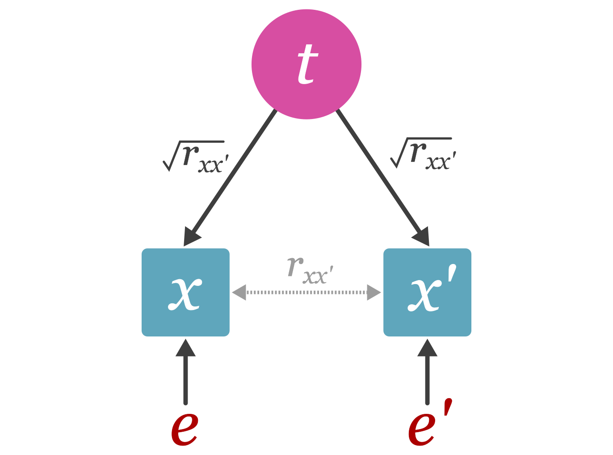

set.seed(343)
t = rnorm(50, 0, 1) # simulate 50 true scores
x1 = t + rnorm(50, 0, 1) # simulate observed scores for measurement 1
x2 = t + rnorm(50, 0, 1) # simulate observed scores for measurement 2
x3 = t + rnorm(50, 0, 1) # simulate observed scores for measurement 3
x4 = t + rnorm(50, 0, 1) # simulate observed scores for measurement 4
xc = x1 + x2 + x3 + x4 # sum observed scores to create composite score Unreliability
Introduction
In general terms, measurement is the process of quantifying an attribute or characteristic of something. In scientific measurement, the measurand is the quantity of the attribute we intend to measure. In the psychological sciences, measurands usually take the form of constructs such as intelligence or anxiety. The goal of measurement is to produce quantities (i.e., scores) that accurately reflect the measurand. It is important to note that measures are not all created equal, some perform better than others. Ideally, measures should produce scores that are consistent and repeatable, this is referred to as the reliability of a measure. A high quality measure should produce highly reliable scores. This section will review what reliability is in theory, how to estimate reliability, and how to adjust effect sizes for measurement error.
Reliability in True Score Theory
True score theory (or classical test theory) is a mathematical formalization of scores obtained from measurements. The true score model assumes that each individual has a true score, \(t\), that stays constant over measurements. Observed scores, \(x_m\), can vary between measurements, \(m\). This variation is due to measurement-specific error, \(e_m\).
\[ x_{m} = t+e_{m} \]
The true score can be defined as the expected value (i.e., the mean) of observed scores over an infinite number of repeated measurements such that, \(t=\mathbb{E}_{m\rightarrow\infty}[x_{m}]\). Therefore, it is also assumed that the expectation of measurement-specific error is zero, \(\mathbb{E}_{m\rightarrow\infty}[e_{m}]=0\). It follows from these assumptions that the covariance between errors and true scores is zero (\(\sigma_{et}=0\)) and the covariance between error scores in parallel measurements is zero (\(\sigma_{e e'}=0\)). The independence between true scores and errors provide convenient parsing of the variance in observed scores (\(\sigma^2_{x_m}\)) into components of variance in true scores (\(\sigma_t^2\)) and errors (\(\sigma_{e_m}^2\)),
\[ \sigma_{x_m}^2 = \sigma_t^2 + \sigma_{e_m}^2 \] If \(\sigma_{e_m}^2 > 0\) then the measurement has imperfect reliability, that is, observed scores are not identical to true scores. In practice, this is almost always the case. Reliability can be defined as the square correlation between observed scores and true scores, \(r_{xt}^2\), or the correlation between observed scores in parallel measurements, \(r_{xx'}=r_{xt}^2\).

Given that errors do not co-vary between parallel measurements and true scores are held constant over measurements, it becomes apparent that the covariance between observed scores produced from parallel measurements must solely be attributable to true score variance, \(\sigma_{xx'}=\sigma_t^2\). The covariance in observed scores can be standardized to obtain the correlation coefficient between parallel measurements (i.e., the reliability), such that, \(r_{xx'}=\sigma_{xx'}/\sigma_x\sigma_{x'} = \sigma_t /\sigma^2_{x_m}\). Therefore reliability can be expressed in a few forms different forms
\[ r_{xx'} =r^2_{xt} = \frac{\sigma_t^2}{\sigma_t^2+\sigma_{e_m}^2} = \frac{\sigma_t^2}{\sigma_{x_m}^2} \]
In the literature, the correlation between observed and true scores, \(r_{xt}\), is often referred to as the “measure quality index” (Hunter and Schmidt 1990), however measure quality encompasses both reliability and validity. A measure can demonstrate high reliability even though the scores produced by the measure do not accurately reflect the measurand (the quantity that we are intending to measure). For example, if an individual were to step on a weight scale with shoes on, the weight presented on the scale would be highly reliable, namely, if the individual were to repeat this process, they would achieve highly similar results. Nevertheless, the observed weight is systematically biased upward by the weight of the shoes. Therefore if a measure is reliable it does not logically follow that the measure is necessarily valid.
Estimating Reliability
In practice, reliability must be estimated through indirect methods, since true scores and errors are unknown. Their are many estimators that can be used however, we will go over three of the most common approaches: coefficient alpha, split-half, and test-retest reliability.
Internal Consistency Estimators
Maybe the most conventionally reported reliability estimator in the psychological sciences is coefficient alpha, also referred to as Cronbach’s alpha or internal consistency. Alpha has the benefit of being computationally convenient, but it also brings along many assumptions that are often violated in practice (Haertel 2006; Sijtsma 2009). A common strategy in the social sciences is to take \(k\) noisy measurements of some construct (e.g., likert responses in a psychological scale) and combine them to create a more stable composite score (\(x_C\)) that better estimates the individlatrue score, \[ x_c = x_1 + x_2 +...+x_k= \sum^k_{m=1}x_m \]Coefficient alpha is represents the reliability of this composite. Coefficient alpha only requires three parameters to calculate, the number of measurements (\(k\)), the variances of each items ( \(\sigma^2_{x_m}\)), and the variance of the composite score (\(\sigma^2_{x_c}\)),
\[ r_{x_c x_c',\alpha} = \frac{k}{k-1}\left( 1 - \frac{\sum_{m=1}^k \sigma^2_{x_m}}{\sigma^2_{x_c}} \right) \]
With tighter assumptions [i.e., strictly parallel forms; Haertel (2006)], the formula for coefficient alpha can be simplified to just two parameters: the number of measurements and the average correlation between measured scores (\(\bar{r}_{x_i x_j}\), where \(i\neq j\)). This formula is known as Spearman-Brown’s prophecy,
\[ r_{x_cx_c',\text{SB}}= \frac{k \bar{r}_{x_i x_j}}{1+(k-1)\bar{r}_{x_i x_j}} \]
This can be simplified further if we only have two parallel measurements. This formulation is traditionally called split-half reliability:
\[ r_{x_cx_c',\text{SH}}= \frac{2r_{x_1 x_2}}{1+r_{x_1 x_2}} \]
All of these reliability estimators measure internal consistency, therefore they do not account for error outside of the measurement-specific error. There are other sources of error that internal consistency reliability estimates do not account for, such as transient error or rater-specific error.
Calculating Internal Consistency in R and Python
Simulate Data: Let us simulate a data set of 50 individuals where each observed score has the same true score with some error.
Calculate Coefficient Alpha Reliability:
# step 1. calculate variance of observed (measured) scores
var_xm = c(var(x1),var(x2),var(x3),var(x4))
# step 2. calculate variance of composite score
var_xc = var(xc)
# step 3. get number of items (k)
k = length(var_xm)
# step 4. calculate coefficient alpha reliability
rel_alpha = k / (k-1) * (1 - sum(var_xm)/var_xc)
print(round(rel_alpha,3)) [1] 0.775Calculate Reliability via Spearman-Brown’s Prophecy:
# step 1. get correlation matrix between all observed scores
corr_mat = cor(cbind(x1,x2,x3,x4))
# step 2. average off-diagonal elements of matrix
diag(corr_mat) <- NA
rxixj = mean(corr_mat, na.rm = TRUE)
# step 3. get number of items (k)
k = dim(corr_mat)[1]
# step 4. calculate Spearman-Brown reliability
rel_SB = k * rxixj / (1 + (k-1) * rxixj)
print(round(rel_SB,3)) [1] 0.775Calculate the Split-Half Reliability:
# step 1. make composite scores for each half of the observed scores
xc1 = x1 + x2
xc2 = x3 + x4
# step 2. calculate the correlation between the scores of both halves
rx1x2 = cor(xc1,xc2)
# step 3. calculate the split-half reliability
rel_SH = 2*rx1x2 / (1 + rx1x2)
print(round(rel_SH,3)) [1] 0.824True Reliability: Lets see how the results compare to the squared correlation of the true scores and our composite score (true reliability).
rxt = cor(xc,t)
print(round(rxt^2,3)) [1] 0.753In this case, the reliability estimates do a fairly good job of estimating the true reliability of the observed scores.
Simulate Data: Let us simulate a data set of 50 individuals where each observed score has the same true score with some error. To calculate the necessary statistics, we will import the numpy package.
import numpy as np
np.random.seed(343)
t = np.random.normal(0, 1, 50) # simulate 50 true scores
x1 = t + np.random.normal(0, 1, 50) # simulate observed scores for measurement 1
x2 = t + np.random.normal(0, 1, 50) # simulate observed scores for measurement 2
x3 = t + np.random.normal(0, 1, 50) # simulate observed scores for measurement 3
x4 = t + np.random.normal(0, 1, 50) # simulate observed scores for measurement 4
xc = x1 + x2 + x3 + x4 # sum observed scores to create composite score Calculate Coefficient Alpha Reliability:
# step 1. calculate variance of observed (measured) scores
var_xm = [np.var(x1),np.var(x2),np.var(x3),np.var(x4)]
# step 2. calculate variance of composite score
var_xc = np.var(xc)
# step 3. get number of items (k)
k = len(var_xm)
# step 4. calculate coefficient alpha reliability
rel_alpha = k / (k-1) * (1 - sum(var_xm)/var_xc)
print(round(rel_alpha,3)) 0.769Calculate Reliability fromSpearman-Brown’s prophecy formula:
# step 1. get correlation matrix between all observed scores
corr_mat = np.corrcoef([x1,x2,x3,x4])
# step 2. average off-diagonal elements of matrix
rxixj = np.mean(corr_mat[~np.eye(k,dtype=bool)])
# step 3. get number of items (k)
k = len(corr_mat)
# step 4. calculate Spearman-Brown reliability
rel_SB = k * rxixj / (1 + (k-1) * rxixj)
print(round(rel_SB,3)) 0.772Calculate Split-Half Reliability:
# step 1. make composite scores for each half of the observed scores
xc1 = x1 + x2
xc2 = x3 + x4
# step 2. calculate the correlation between the scores of both halves
rx1x2 = np.corrcoef(xc1,xc2)[0,1]
# step 3. calculate the split-half reliability
rel_SH = 2*rx1x2 / (1 + rx1x2)
print(round(rel_SH,3)) 0.772True Reliability: Lets see how the results compare to the squared correlation of the true scores and our composite score (true reliability).
# display values
rxt = np.corrcoef(xc,t)[0,1]
print(round(rxt**2,3)) 0.791In this case, the reliability estimates do a fairly good job of estimating the true reliability of the observed scores. There are also functions within the `psych` package that allow you to easily calculate coefficient alpha () among other reliability estimators
Test-Retest Stability Estimator
There measurement errors that exist outside of the measurement instrument itself. Transient errors represent fluctuations in observed scores over time. These fluctuations (e.g., weight over the course of a single day) add extraneous within-person variance that can mask true scores (i.e., expectation of observed scores). For example, if a researcher wants to investigate how individuals differ in processing speed, then variation within an individual’s scores across multiple testing sessions would be considered error since the goal of the study is to investigate between-person variation. Considering transient fluctuations as error depends on the research goal, so it is important for researchers to take care in considering which variance components should be considered error in their study. To estimate test-retest reliability, we can compute the pearson correlation coefficient between the measurement at time 1 (\(x_{T_{1}}\)) and the second measurement at time 2 (\(x_{T_{2}}\)).
\[ r_{xx',\text{TR}}= r_{x_{T_1}x_{T_2}} \]
Unreliability and Effect Size Bias
Unreliability on correlation coefficients
Background
Unreliability error on standardized mean differences
Bobko, Philip, Philip Roth, and Christopher Bobko. 2001. “Correcting the Effect Size of d for Range Restriction and Unreliability.” Organizational Research Methods - ORGAN RES METHODS 4 (January): 46–61. https://doi.org/10.1177/109442810141003.
Brennan, Robert L. 2010. “Generalizability Theory and Classical Test Theory.” Applied Measurement in Education 24 (1): 1–21. https://doi.org/10.1080/08957347.2011.532417.
Charles, Eric. 2005. “The Correction for Attenuation Due to Measurement Error: Clarifying Concepts and Creating Confidence Sets.” Psychological Methods 10 (July): 206–26. https://doi.org/10.1037/1082-989X.10.2.206.
Gliem, Joseph A., and Rosemary R. Gliem. 2003. “Calculating, Interpreting, And Reporting Cronbach’s Alpha Reliability Coefficient For Likert-Type Scales.” https://scholarworks.iupui.edu/handle/1805/344.
Haertel, Edward H. 2006. “3. Reliability.” In, 4th ed.
Hunter, John E., and Frank L. Schmidt. 1990. Methods of meta-analysis: correcting error and bias in research findings. Newbury Park: Sage Publications.
Mendoza, Jorge L., and Michael Mumford. 1987. “Corrections for Attenuation and Range Restriction on the Predictor.” Journal of Educational Statistics 12 (3): 282–93. https://doi.org/10.3102/10769986012003282.
Schmidt, Frank L., Huy Le, and Remus Ilies. 2003. “Beyond Alpha: An Empirical Examination of the Effects of Different Sources of Measurement Error on Reliability Estimates for Measures of Individual-Differences Constructs.” Psychological Methods 8: 206–24. https://doi.org/10.1037/1082-989X.8.2.206.
Sijtsma, Klaas. 2009. “On the Use, the Misuse, and the Very Limited Usefulness of Cronbach’s Alpha.” Psychometrika 74 (1): 107–20. https://doi.org/10.1007/s11336-008-9101-0.
Spearman, C. 1904. “The Proof and Measurement of Association Between Two Things.” International Journal of Epidemiology 39 (5): 1137–50. https://doi.org/10.1093/ije/dyq191.
Viswanathan, Madhu. 2005. Measurement Error and Research Design. SAGE.
Viswesvaran, Chockalingam, Deniz S. Ones, Frank L. Schmidt, Huy Le, and In-Sue Oh. 2014. “Measurement Error Obfuscates Scientific Knowledge: Path to Cumulative Knowledge Requires Corrections for Unreliability and Psychometric Meta-Analyses.” Industrial and Organizational Psychology 7 (4): 507–18. https://doi.org/10.1017/S1754942600006799.